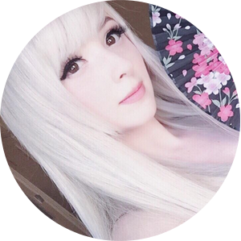

 Agée de 24 ans, je me prénomme Sophie et suis née en Belgique.
Passionnée par l'asie et les technologies en tout genre depuis mon plus jeune âge, je suis constamment à l'affut des nouveautées connectées. Etant très sociable, j'ai eu la chance de rencontrer des personnes venant des quatre coins du monde. Cela entraina d'ailleurs mon intérêt pour les langues telle que l'anglais que je parle quotidiennement, l'allemand, le portugais ou encore le japonais.
Etant en permanence connectée, j'utilise régulièrement les plateformes de partage comme par exemple Instagram. Vous pouvez d'ailleurs m'y retrouver ici Et ici vous pouvez vous rendre sur une potentielle page 2
Après avoir terminé mes études à l'Athénée royal d'Herstal, je me suis lançée dans des études de droit pour ensuite bifurquer sur la psychologie à l'Uliège.
J'ai pu, durant toutes ces années, aquérir énormément de connaissances dans ces deux branches, bien qu'au fil du temps, il était de plus en plus évident que je ne voyais aucun avenir pour moi dans l'un de ces domaines.
J'ai décidé de suivre mes envies, mes passions et de me lancer dans quelque chose qui me plaisait réellement et attisait ma curiosité. C'est dans cet état d'esprit que j'ai songé à me lancer dans la programmation et peut être par la suite la sécurité informatique, deux domaines qui m'ont toujours passionnée bien que je n'ai jamais osé sauter le pas. C'est pour tout cela que je pense que la formation BeCode peut m'apporter tout selon j'ai besoin pour mon avenir et bien plus encore.
Pour de plus amples informations, je vous invite à me contacter ici